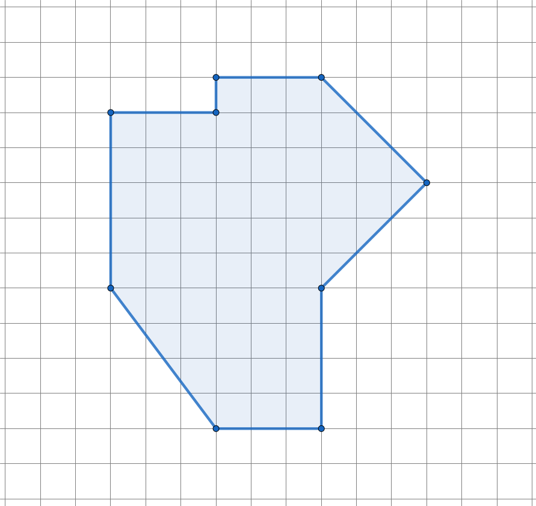
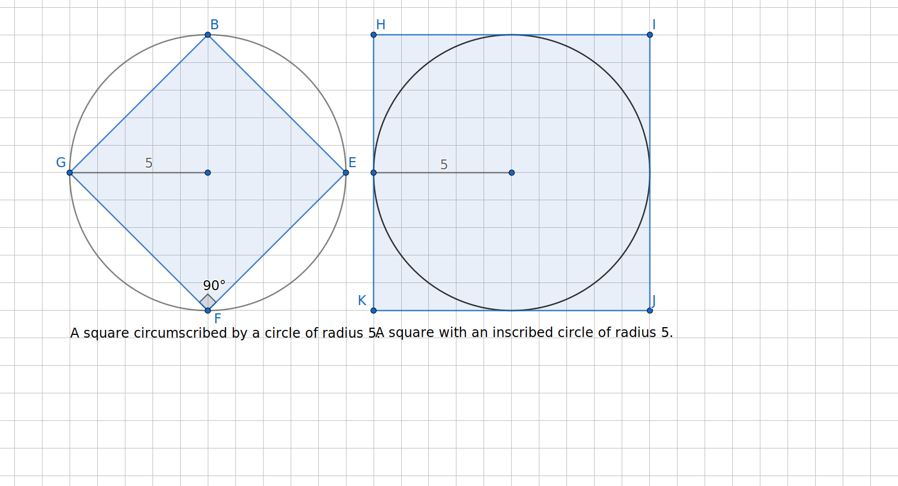
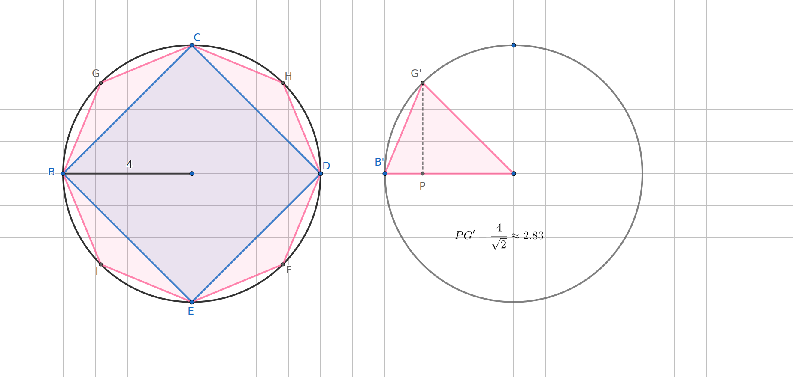

In this section, we will determine the area formulas for three shapes, a parallelogram, a triangle, and a trapezoid. Our goal will be not only to use the formulas but more importantly to be able to explain why they follow from the basic principles of area. In particular, we will use the formula for the area of a rectangle, \(A=\ell\times w\text{,}\) as our starting point and derive other area formulas from it.
Subsection2.1.1Area of a Parallelogram
Exploration2.1.1.Discovering an Area Formula for a Parallelogram.
Refer to the definition of parallelogram Definition 1.2.15 as needed to complete the following.
(a)
Sketch the following:
A parallelogram with two different angle measures and two different lengths.
A parallelogram with at least one acute angle and four congruent sides.
A parallelogram with four congruent angles. What do we usually call this parallelogram?
Two parallelograms which share the same side lengths but have different heights.
(b)
Beginning with the parallelogram pictured below or the one you sketched in Item 1 of Task 2.1.1.a, explain and demonstrate how you would construct a rectangle with the same area. You are allowed to cut the parallelogram and rearrange or duplicate pieces as part of your argument.
(c)
Building on the previous problem, derive an area formula for a parallelogram. Use a combination of words and pictures to explain how it comes from the area formula for a rectangle and how you know it must work for all parallelograms.
Hint.
Be sure to label the height \(h\) and base \(b\) in your pictures. These lengths should stay the same throughout your explanation and clarify the relationship between your parallelogram and rectangle.
Now that we know the area formula for parallelograms and why it works, we may add it to our toolbox and use it as well as the area formula for a rectangle in the next exploration.
Subsection2.1.2The Area of a Triangle
Exploration2.1.2.Discovering the Area Formula for a Triangle.
You probably remember the angle formula for a triangle; in fact, you may have used it already in this course! But why is the area \(A_{tri}=\frac{1}{2}bh\text{?}\) This exploration will encourage you to answer that question.
(a)
Triangles come in all shapes and sizes. Sketch one or more examples of the following types of triangles.
An equilateral triangle.
A right isosceles triangle.
An acute triangle that is not equilateral.
An obtuse scalene triangle.
(b)
To demonstrate WHY the formula, \(A(tri)=\frac{1}{2}bh\text{,}\) gives the area for any triangle, construct a parallelogram based on the triangle shown below. How is the area of your parallelogram related to the area of the triangle? Explain.
(c)
A friend (or one of your students) asks you why the area formula for a triangle is \(A=\frac{1}{2}bh\text{.}\) Rewrite and elaborate on your answer to the previous task to give a clear, thorough, and cohesive explanation. Be sure to use words and pictures as needed to make the locations of \(b\) and \(h\) clear. The relationship between the triangle and the parallelogram needs to be made explicit as well. Do they have the same height and base? Why or why not? Why must their areas be related and how?
Subsection2.1.3The Area of a Trapezoid
We now have three area formulas in our toolbox:
Table2.1.1.First Three Area Formulas
Shape
Area Formula
Variables
Rectangle
\(A_{rect}=\ell w\)
area \(A\text{,}\) length \(\ell\text{,}\) width \(w\)
Parallelogram
\(A_{par}=bh\)
area \(A\text{,}\) base \(b\text{,}\) height \(h\)
Triangle
\(A_{tri}=\frac{1}{2}bh\)
area \(A\text{,}\) base \(b\text{,}\) height \(h\)
You may use these three formulas in the next exploration as needed.
Exploration2.1.3.The Area Formula for a Trapezoid.
We now turn to the trapezoid 1.2.16. Once again, we look at some examples before exploring the formula for area.
(a)
Sketch example(s) of each of the following trapezoids:
An isosceles trapezoid.
A trapezoid with one right angle.
A trapezoid with one acute base angle and one obtuse base angle.
(b)
Use dissection (cutting), duplication, and/or rearrangement to construct or deconstruct the trapezoid below into one or more rectangles, parallelograms, and/or triangles. If you found one method, challenge yourself to do this a second way. Perhaps, you can use just triangles or just parallelograms. Briefly describe your construction or deconstruction.
(c)
How does your (de)construction demonstrate that the area formula for a trapezoid is \(A_{trap}=\frac{1}{2}(b_1+b_2)h\text{?}\) The steps that follow will assist you in forming a convincing argument.
Choose one of the constructions or deconstructions you created in the previous task. Label the height of the trapezoid with the variable \(h\text{.}\) The summit and base of the trapezoid are typically labeled \(b_1\) and \(b_2\text{,}\) but you are free to name them \(a\) and \(b\) if you would like to avoid subscripts. Once you select your labels, you will use them consistently for the remainder of this activity. In my discussion, I will use \(b_1\) and \(b_2\) to represent the summit and base.
Now identify any parts of your other shapes that must have the same length as your trapezoid’s height, base, or summit because of the way they were constructed. Label them with the appropriate variable to indicate this equality. Be careful!
(Skip if this doesn’t apply to your (de)construction.) If you created any triangles, rectangles, or parallelograms which have, or might have, different base length or height, you will need to give these lengths new, different labels. If you find that you need to create a lot of new labels, you might want to use a different construction or deconstruction to reduce the amount of algebra you will need to do later.
(Skip if this doesn’t apply to your (de)construction.) Relate any new labels to the trapezoid’s height, base, and/or summit. For example, if you split the base into three segments, labeled \(x\text{,}\)\(y\text{,}\) and \(z\text{,}\) you would write down the relationship \(x+y+z=b_2\text{.}\) If you split the base into two segments, one of which is congruent to the summit, you might write \(x+b_1=b_2\) or equivalently, \(b_1=b_2-x\text{.}\)
Compute the areas of any rectangles, parallelograms, or triangles in your construction/deconstruction, leaving variables in your expressions for each area. Be careful to use the variables assigned in your sketch which may be different than the variables in the standard formulas. For example, if you created an upside-down triangle, its base may be the summit of the trapezoid, and so we would use the label \(b_1\) (or \(a\)) instead of \(b\text{.}\)
Write a draft of how your (de)construction shows that the area of any trapezoid must be \(A_{trap}=\frac{1}{2}(b_1+b_2)h\) where \(b_1\) is the length of the summit, \(b_2\) is the length of the base, and \(h\) is the height. You may be asked to write this explanation more formally outside of class.
Subsection2.1.4Thoughts on Area
Adding the formula \(A=\frac{1}{2}(b_1+b_2)h\) for the area of a trapezoid, we now have four area formulas in our toolbox. One could continue to add more: kites, pentagons, hexagons, etc., but the list would become unwieldly and unhelpful. Instead, we will simply break other polygonal shapes into triangles, parallelograms, and other shapes so that we can compute the area of these and add (or subtract) the areas as appropriate. Measuring tools could be used to estimate the dimensions needed to compute the area of physical spaces such as floorspace or a garden.
Subsubsection2.1.4.1Estimating the Area of Curved Regions
As our shapes become more irregular or curved, we apply the definition of area Definition 1.1.1 together with estimation. For these situations, we may superimpose the region over a grid of \(1\times 1\)-unit squares. Of course, the boundary of the region may cross through some squares as shown below.
Figure2.1.2.A curved region on a grid of 1x1-unit squares
Exploration2.1.4.Estimating Area of a Curved Region.
(a)
Give a rough estimate of the area of the region sketched in Figure 2.1.2. Briefly describe what you did.
Hint.
There are many, many right answers for this task!
(b)
Count the squares that are completely inside the sketched region. This will give an underestimate of the area.
(c)
Give an overestimate of the area by selecting and counting a collection of squares that completely encloses the sketched region.
(d)
Carefully add a horizontal line halfway between each pair of horizontal lines on the original grid. Similarly add vertical line between each existing pair of vertical lines. This will produce a more refined grid with smaller squares.
Each square on the original grid had an area of 1 unit. What is the area of each new square that you created?
Count the small squares that are entirely inside the region and use this to compute an underestimate of the region.
Give a more refined overestimate of the area of the region by identifying a collection of squares that encloses the region.
(e)
Briefly describe how this method can be used to measure the area of any region to a desired level of precision. What are some limitations to this method?
Subsubsection2.1.4.2The Area of a Circle
Although a circle is not a polygon, we can use polygons to derive the formulas for the area and perimeter of a circle.
Definition2.1.3.Defining a Circle.
A circle is the set of all points that are the same distance from a point called the center of the circle. The radius (pl. radii) refers both to any segment from the center of the circle to a point on the circle and to the length common to all radii. A segment that joins two points of the circle and passes through the center is called a diameter. The length of a diameter is also called the diameter and is twice the length of the radius.
Archimedes (287-212 BC) determined the area of a circle by looking at inscribed and circumscribed polygons. As the number of sides grew, the area of the polygons would approach the area of the circle, with the area of the inscribed polygons giving a lower estimate and the area of the circumscribed polygons giving an overestimate. The number \(\pi\) was not known at the time, but this method provides a means of calculating \(\pi\) to any level of precision. Note that \(\pi\neq 3.14\text{.}\) The value \(3.14\) is only a rough estimate. In fact, mathematicians have now calculated over sixty trillion digits for \(\pi\text{.}\) For our purposes, \(\pi\approx 3.14159...\) should be sufficient, but space travel engineers usually need about 40 digits of \(\pi\) for their work.
Figure2.1.4.Inscribing and circumscribing a circle with squares, octagons, and 16-gons.
There are two measurements associated with a circle. In addition to area which measures the interior space, we often wish to compute the length of the boundary around the circle. We call this boundary length, the circumference of the circle and can think of it as the length of string needed to wrap around the circle. Both area and circumference depend only on the length of the circle’s radius.
A technique, similar to the one described for estimating area using polygons of increasing number of sides, can be used to find the circumference or distance around a circle. We give the resulting formula below.
Definition2.1.5.Measuring a circle.
The area of a circle is the interior space of a circle and is computed by the formula \(A=\pi r^2\) where \(r\) is the radius of the circle. The circumference of a circle is the length of its boundary and is given by \(C=2\pi r\text{.}\)
Exercises2.1.5Exercises
Skills and Recall
1.
Compute the areas of the following figures. The boundary of each figure is given by solid lines. Dashed segments are not part of the boundary, but provide additional information that may be helpful.
Determine both the area and the perimeter of the following figure. Assume that each square of the grid has area 1 square centimeter.
Area
Perimeter

Figure2.1.9.A nonagon
Extending the Concepts
4.
A parallelogram \(WXYZ\) has sides of length 3 inches and length 4 inches and rectangle \(RSTU\) also has sides of length 3 inches and length 4 inches. Which has the larger area? Use pictures and words to give a clear explanation.
5.
In Figure 2.1.10, two copies of a circle of radius 5 are given. The circle on the left circumscribes square \(BEFG\text{,}\) meaning that the vertices \(B\text{,}\)\(E\text{,}\)\(F\text{,}\) and \(G\) lie on the circle. The circle on the right is inscribed in square \(HIJK\text{.}\) Here the circle just touches the square at the midpoint of each side.
Based on the picture, what should be true about the area of the circle relative to the two squares?
Compute the area of square \(BEFG\text{.}\)
Compute the area of square \(HIJK\text{.}\)
Compute the area of the circle.
Do these measurements agree with your expectation?

Figure2.1.10.Square circumscribed by and inscribed in a circle of radius 5.
6.
Figure 2.1.11 shows a square and an octagon circumscribed by a single circle of radius 4. On the left, an eighth of the octagon is shown to illustrate its height of \(\frac{4}{\sqrt{2}}\) or approximately \(2.828\text{.}\)
What do you expect to be true about the areas of the square, the octagon, and the circle? Why?
Compute the area of the square.
Compute the area of the octagon.
Compute the area of the circle.

Figure2.1.11.Square and Octagon circumscribed by a circle of radius 4
Writing Prompts
7.
Write a letter to a friend in which you explain how the area of a trapezoid is derived from previously known area formulas, such as rectangles, parallelograms, and/or triangles. See Subsection 1.3.3 for suggestions on how to write a clear explanation.
8.
Research the history of the number \(\pi\) focussing on a role that geometry played in its discovery or development.